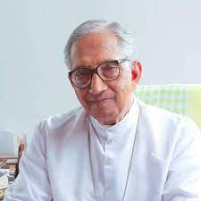
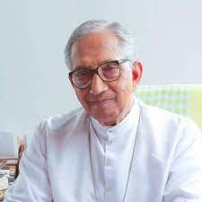

LOURDES MATHA
LOURDES MATHA

 

As flag bearers of excellence in professional education in South Kerala, “Lourdes Matha Catholic Educational Society”
was given birth by the initiative of Rev. Fr. Joseph Kurinjiparampil, with the encouragement and association of a few Syrian Catholic Parishioners in Thiruvananthapuram,
who have left indelible imprints in the segment of education and with the blessings and patronage of His Grace Mar Joseph Powathil,
the then Archbishop of Changanacherry. Lourdes Matha College of Science and Technology established by the “Lourdes Matha Catholic Educational Society”,
has been approved by the Govt of Kerala and the All India Council for Technical Education (AICTE) vide
order No: 06/06/KER/ENGG 2002-03 dated 27-05-2002 and is affiliated to APJ Abdul Kalam Technological University.
The College has a spacious campus of 25 acres at Kuttichal,a rustic village in the outskirts of Thiruvananthapuram city, hardly 24 km away from it.
The scenic beauty and virgin surroundings of the picturesque lush green rubber plantations in the backdrop of misty Western Ghats and the serene,
tranquil hillock provide a perfect environment for harmonious study.
The vision of the Lourdes Matha Educational Society is to establish a “Centre of Excellence” in the field of Engineering and Technology to mould world class professionals.
His Grace Mar Joseph Perumthottam, the Archbishop of Changanacherry is the Patron and Spiritual Guide and Dr. Thomas Padiyath, Vicar General is the president.
PRINCIPAL

Dr. P.P. Mohanlal – Principal : Lourdes Matha College of Science and Technology
Dr. P.P. Mohanlal, our Principal, is an eminent scientist and academician, has 41 years of combined research and teaching experience.
He is a Fellow of the prestigious Indian National Academy of Engineering (INAE). Prior to joining LMCST,
he was Prof. Satish Dhawan Distinguished Professor at Indian Institute of Space Science and Technology (IIST) where he taught undergraduate & post graduate courses,
was consultant for developing scientific payloads for Mars-2, Venus Missions and nanosatellite projects
which are collaborative ventures of IIST with California Institute of Technology(Caltech) and University of Colorado.
He served the Indian Space Research Organization (ISRO) for 39 years starting from 1977 and held several positions such as Head of Division,
Group Director, Deputy Director, Associate Director and Director in ISRO.
He was Director of ISRO Inertial Systems Unit and led the original indigenous development of inertial sensors, systems,
Inertial actuators and special mechanisms for ISRO’s Launch vehicles, spacecraft, re-entry and scientific missions
including the first Indian Moon and Mars Missions. Considering his significant contributions, he was awarded
(1) ISRO Team Excellence Award: “SRE Mission” in 2007.
(2) ISRO Team Leader Excellence Award: “GPS Aided INS for Launch Vehicle” in 2009.
(3) ISRO Individual Merit Award: for Overall contributions to ISRO in 2009.
(4) ISRO Team Leader Excellence Award: “mini RESINS development for Launch Vehicle Navigation” in 2010.
(5) ASI Award for “Rocket and Related Technologies” in 2012.
(6) ISRO “Performance Excellence Award” in 2014.
He has 3 Indian patents, 40 open research publications in journals, International/National conferences and
590 classified technical reports (confidential design reports) to his credit.
He has delivered more than 20 invited technical lectures / course lectures / AICTE lectures/UN affiliated course lectures.
He is also a Fellow of Astronautical Society of India(ASI), Fellow of Aeronautical Society of India(AeSI),
Fellow of Institution of Engineers India(IEI), Fellow of Institution of Electronics and Telecommunication Engineers India(IETE),
Senior Member of IEEE, Member of Institute of Navigation(ION), USA and Life Member of Indian Science Congress Association.
He received the Ph.D. degree (Control Systems) and M. Tech degree in Applied electronics and Instrumentation from University of Kerala
(First class with distinction and first rank). He obtained B.E. degree from Madras University in Electronics and communication
engineering in 1976. His research interests include aerospace navigation sensors and systems, satellite navigation, control systems,
optimal filtering, signal processing, electronic circuits and systems design, neural networks, fuzzy logic,
Clifford algebra applied to field theory, Screw theory applied to navigation algorithm, laser cooling of atoms and atom interferometry.